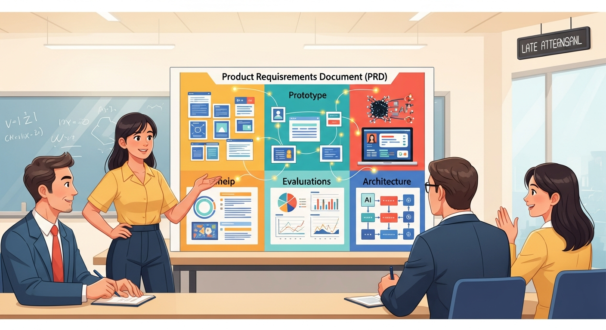

You have read about framing problems, building prototypes, engineering for production, and measuring what matters. Now comes the hard part: doing all of it simultaneously, under time pressure, with incomplete information, while making decisions that will determine whether your AI product succeeds or joins the graveyard of failed AI initiatives. The capstone playbook, your Learn phase experience, guides you through a complete development cycle where every concept from this book must work together or the product fails.

Objective: Apply the complete AI product development workflow in a structured, guided experience that synthesizes all concepts from the book.
Chapter Overview
This chapter presents the complete end-to-end workflow, integrating discovery, design, prototyping, engineering, evaluation, launch, and governance into a unified 12-week playbook. You will work through nine distinct phases, each building on the last, culminating in a shipped AI product and a thorough postmortem.
Four Questions This Chapter Answers
- What are we trying to learn? How all the concepts in this book fit together in a complete AI product development lifecycle.
- What is the fastest prototype that could teach it? Working through one phase of the capstone playbook with a real or simulated product concept to experience the full workflow.
- What would count as success or failure? A shipped AI product with documented discovery, design, engineering, evaluation, and postmortem learning.
- What engineering consequence follows from the result? Individual chapters teach pieces; the capstone integrates them into the complete AI product development discipline.
Learning Objectives
- Apply complete AI product development workflow from opportunity to postmortem
- Integrate discovery, design, prototyping, engineering, and launch concepts
- Build a portfolio-ready AI product through structured phases
- Evaluate your work using formal rubrics and checklists
- Conduct rigorous postmortem analysis for continuous improvement